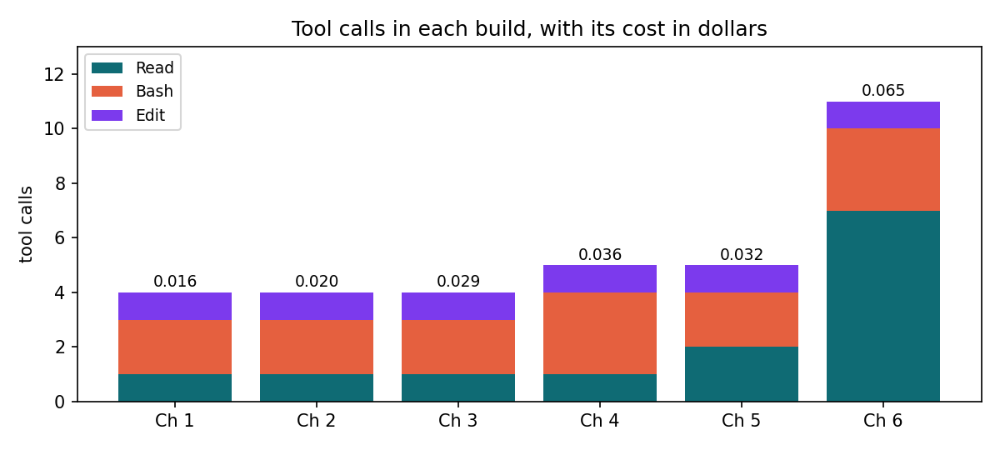

A coding assistant is an ordinary language model whose replies can ask for tools, inside a program that runs those tools and feeds the results back. Anthropic describes Claude Code's work as three phases that blend together, gathering context, taking action and verifying results. What the assistant gets right depends on what it has read, and what it may do depends on the permissions the program enforces.
tool_use block, and the program runs it
and returns a tool_result. The model never runs anything itself.
An assistant knows what its tools have put in its context and nothing else, so read its transcript before trusting its summary.
A model, a loop and two tools
The notebook builds the loop in a few dozen lines. It gives Claude Sonnet 5.5 two tools over the chapter's
supportdesk package, list_files and read_file, which can reach that
package's six files and nothing else, and asks what happens when the API answers with a 429 while the package is
drafting a reply.
| Request | stop_reason | Tools asked for | Input tokens | Output tokens |
|---|---|---|---|---|
| 1 | tool_use | list_files | 528 | 26 |
| 2 | tool_use | read_file desk.py, retry.py, ask.py | 591 | 144 |
| 3 | end_turn | none, the answer | 3,422 | 507 |
The model listed the files, then asked for three of them in one reply, and answered on the third request. Its
input jumped from 591 to 3,422 tokens, because the three files it read travel with every later turn. The answer
traced the retry path through retry.create_with_retries, is_retryable and
retry_after to the exception that escapes desk.main. Part 7 builds tools and agents
properly, and this loop is the whole mechanism behind them.
An assistant sees only what it reads
The model read desk.py, retry.py and ask.py, and never opened
__init__.py, tokencost.py or triage.py. Its answer said so itself:
I only read the reply-drafting path. The earlier `triage.triage` call in `handle` is a separate request, and I didn't open `triage.py`, so I can't say whether it has the same retry protection.
That limit was stated, which is the better case. An assistant's picture of a repository is the files and command output it has pulled into its context, and a confident summary can rest on a partial reading.
Claude Code works the same way at a larger scale. As of November 2026 its documentation says a session can reach
the files in the folder it starts in and below, with permission for files elsewhere, the terminal and the git
state. At the start it loads CLAUDE.md from that folder and every folder above it, and a new session
starts with a fresh context window and none of the previous session's conversation. When the window fills, Claude
Code compacts the conversation into a summary, and detailed instructions from early on can be lost.
Claude Code's tools and permissions
Claude Code offers the model many more tools than the notebook's two. As of November 2026 its tools reference lists, among others:
| Tool | What it does | Needs permission |
|---|---|---|
Read | Reads the contents of files | No |
Glob, Grep | Find files by pattern, search file contents | No |
Edit | Makes targeted edits to specific files | Yes |
Write | Creates or overwrites files | Yes |
Bash | Executes shell commands, with a built-in set of read-only commands allowed without asking | Yes |
WebFetch, WebSearch | Fetch a URL, search the web | Yes |
Agent | Spawns a subagent with its own context window | No |
A permission mode decides what runs without asking. The documentation lists default, which allows
reads only, acceptEdits, plan, auto, dontAsk, which allows
reads and pre-approved tools and denies everything else, and bypassPermissions, meant only for
isolated containers. The book's builds run headless with --bare, which offers only the shell, file
read and file edit tools and skips CLAUDE.md, in dontAsk mode with a short list of
allowed commands. This chapter's build shows the boundary at work. Claude Code's first shell command was allowed,
and its second, a loop over every file, was refused, so it read the files one by one with Read.
Six builds, read from their transcripts
Every build in the book keeps a transcript of its steps, so the loop can be measured across all of them.

| Chapter | Tool calls | Refused | Turns | Output tokens | Dollars |
|---|---|---|---|---|---|
| 1 | 4 | 0 | 5 | 728 | 0.0162 |
| 2 | 4 | 0 | 5 | 1,049 | 0.0205 |
| 3 | 4 | 0 | 5 | 1,501 | 0.0285 |
| 4 | 5 | 0 | 6 | 1,843 | 0.0357 |
| 5 | 5 | 0 | 6 | 1,337 | 0.0323 |
| 6 | 11 | 1 | 12 | 3,176 | 0.0648 |
The first five builds wrote a module from a spec and tests in 4 or 5 tool calls, read the spec, run the tests or look around the folder, write with Edit, run the tests. Chapter 6's build explained a package, and took 11, seven of them Read. It also wrote the most, 3,176 output tokens, and cost the most, 0.0648 dollars, because explaining code means reading all of it and every file read is carried through the turns that follow.
Where working with a coding assistant goes wrong
- A partial reading produces a summary that sounds as sure as one from a full reading. The notebook's model answered after reading half the package, and only its own caveat showed it.
- Small factual slips hide in correct answers. The answer said backoff “starts at about 1 second”, and the first wait is a random fraction of a second.
- Context that grows unnoticed costs on every turn. One request that read three files raised the input nearly sixfold for the request after it.
- Broad permissions let a session do more than the task needs. The builds allow one or three commands, and a refused command shows up in the transcript.
- A transcript left unread hides how the work was done. Only the transcripts show that three of the six builds wrote their file before running the tests.
Build it with Claude Code
This chapter's build generates no code. The book gave Claude Code the supportdesk package, the
modules generated in Chapters 1, 3, 4 and 5 plus a desk.py the book wrote to join them, and asked
for a guide for a new engineer. The spec says what the guide must contain.
# GUIDE.md `supportdesk/` is a small Python package that answers support tickets. Read it and write `GUIDE.md` at the top of this folder, a guide for an engineer who joins the project tomorrow and has to change it. Change no other file. ## What the guide covers The guide starts with a `# ` title line, then has these four sections, with these headings, in this order. - `## Modules` describes every Python file in `supportdesk/`, one bullet per file, starting with the file name in backticks, such as `` `desk.py` ``. - `## How a ticket flows` follows one ticket through the code, from the call that starts the work to the value it returns, naming each function in the order the code calls it. - `## Running it` says how to run the package from a shell, with the command in a fenced code block, and which environment variable it reads the key from. - `## Gaps and risks` lists, as bullets, at least three things a careful reviewer would want fixed or checked, each pointing to the file it concerns. ## How to name code Write every function's name in backticks with empty parentheses, such as `` `handle()` ``, and name only functions that exist in `supportdesk/`. Name a function in a module other than the one it is defined in as `module.function()`, such as `` `triage.triage()` ``, whenever the bare name would be ambiguous. Describe what the code does, and keep opinions to the gaps section. Keep the whole guide under 900 words.
A guide is prose, so the spec makes every part of it checkable. Fixed headings let a test find each section. One bullet per file, in backticks, lets a test confirm that no module was skipped. The naming rule, backticks and empty parentheses with the module where a name is ambiguous, turns every function the guide mentions into a claim a test can check against the code. The gaps section must name a file in each bullet, so each claim points somewhere a reviewer can look, and the word limit keeps the guide readable in one sitting.
def test_no_function_is_invented(guide):
found = functions()
for module, name in named_functions(guide):
assert name in found, f"{name}() is not defined in supportdesk/"
if module is not None:
assert module in found[name], f"{module}.{name}() is not where {name}() is defined"
def test_the_flow_follows_the_code(guide):
flow = [name for _, name in named_functions(section(guide, "## How a ticket flows"))]
order = ["handle", "triage", "build_request", "create_with_retries", "call_cost"]
firsts = [flow.index(name) for name in order if name in flow]
assert len(firsts) == len(order), f"the flow should name {order}"
assert firsts == sorted(firsts), "the flow names the functions out of order"
def test_the_package_is_unchanged():
# the sizes of the files the book gave, so a guide written by editing the code fails
sizes = {p.name: len(p.read_bytes()) for p in PACKAGE.glob("*.py")}
assert sizes == SIZESThe first parses the package with ast and fails on any function the guide names that the code doesn't
define, or names in the wrong module, which is the test that catches an invented function. The second checks that
the flow section names the five functions handle() calls in the order it calls them. The third
compares the package's file sizes with the ones the book gave, so a guide that passed by editing the code
fails.
The prompt differs from the earlier builds' in what it allows. It names the folder to explore, says to change only
GUIDE.md, and permits ls and grep beside the test command, which
build.json passes to Claude Code as its allowed commands.
Read spec.md, explore the package in supportdesk/, and write GUIDE.md so that every test in tests/ passes. Create GUIDE.md with the Edit tool and change no other file. You may run python3 -m pytest -q tests to check the guide, and ls and grep to look around. Do not change the tests.
["python3 -m pytest *", "ls *", "grep *"]
The book ran it with Claude Code 2.1.322 and Claude Sonnet 5.5, headless, with
BOOK_MODE=record python3 scripts/claude_build.py how-coding-assistants-work. The transcript shows these steps:
- Claude Code read
spec.md. - It ran
cd .; ls -R . | grep -v pyc | head -50; cat tests/*.py, which listed the folders and printed the tests. - It tried
cd ./supportdesk; for f in *.py; do echo "=== $f"; cat $f; done, anddontAskmode refused it. It said it would use Read instead. - It read the six files of the package one at a time, starting with
desk.py. - It wrote
GUIDE.mdwith one Edit, ran the tests, and all 9 passed.
# supportdesk guide `supportdesk/` answers a support ticket in three steps: it sorts the ticket into a category, drafts a reply, and prices that reply. ## Modules - `__init__.py` holds only a docstring; the package has no import-time code. - `desk.py` is the entry point. `handle()` runs one ticket end to end and `main()` is the command line wrapper. It also holds the `SYSTEM` prompt for replies. - `triage.py` sorts a ticket into one of `CATEGORIES` (billing, login, shipping, other). It defines `triage.triage()`, `triage.parse_category()`, `triage.normalize_label()` and its own `triage.answer_text()`. - `ask.py` builds and sends plain requests. `ask.build_request()` validates the prompt, history and token limit and returns the request dict. `ask.answer_text()` joins the text blocks of a message, `ask.format_usage()` renders token counts, `ask.chat()` runs a multi-turn loop, and `ask.main()` is its own command line. - `retry.py` wraps calls in retries. `retry.is_retryable()` decides whether an error is worth retrying, `retry.retry_after()` reads the `retry-after` header, `retry.backoff_delay()` computes a jittered exponential wait, `retry.call_with_retries()` is the loop, and `retry.create_with_retries()` applies it to `messages.create`. - `tokencost.py` prices usage from the `PRICES` table. `tokencost.call_cost()` returns dollars, `tokencost.prompt_tokens()` totals the input side, `tokencost.context_check()` compares a prompt with the context window, and `tokencost.project_conversation()` lists usage for a growing conversation. ## How a ticket flows 1. `desk.handle()` receives the client and the ticket text. 2. It calls `triage.triage()`, which rejects an empty ticket, sends one `messages.create` request with the triage system prompt, and turns the reply into a category through `triage.answer_text()` and `triage.parse_category()`. The category is one of the four labels, or `unrecognized`. 3. `ask.build_request()` builds the drafting request from a prompt containing the category and ticket, with the `SYSTEM` prompt and the default model. 4. `retry.create_with_retries()` sends it using a client with the SDK's own retries turned off, and passes the call to `retry.call_with_retries()`, which retries errors that `retry.is_retryable()` accepts. 5. `tokencost.call_cost()` prices the message's usage for the request's model. 6. `ask.answer_text()` extracts the reply text, and `desk.handle()` returns a dict with `category`, `reply` and `cost`. ## Running it ``` export ANTHROPIC_API_KEY=your-key python3 -m supportdesk.desk "My order arrived with a cracked screen." ``` The `anthropic` client reads the key from the `ANTHROPIC_API_KEY` environment variable. If no ticket is given as an argument, `desk.main()` reads it from standard input. It prints the category, the reply and the cost in dollars. ## Gaps and risks - `triage.py`: `triage.normalize_label()` is never called, and it maps unknown labels to `other` while `triage.parse_category()` returns `unrecognized`. The two disagree, and `desk.py` puts `unrecognized` into the drafting prompt. - `desk.py`: the triage call is not retried; only the drafting call goes through `retry.py`, so a transient error during triage fails the ticket. - `desk.py`: `desk.main()` has no handling for an empty ticket or API errors, and the ticket text is placed directly into the prompt. - `ask.py`: `ask.answer_text()` duplicates `triage.answer_text()` with slightly different behaviour, and the model name is repeated in `ask.py` and `triage.py`. - `tokencost.py`: prices are hard-coded (`PRICES_AS_OF` is 2026-11) and only some models have long-prompt rates; `tokencost.call_cost()` raises for any model not in the table. - `retry.py`: the retry loop sleeps in-process with no overall time limit beyond the attempt count.
The build took 12 turns and cost 0.0648 dollars. The tests confirm the guide's
structure and its function names, and the notebook confirms the names again, 18 distinct functions, every one
defined where the guide says. The prose needed review, and the notebook ran the claims it could. The first gap is
real. triage() parses the reply with parse_category(), which returns
unrecognized for Billing., while normalize_label(), which would return
billing, is never called. It sat in the module Chapter 1's first build produced, because that spec
asked for both functions, and Chapter 1's build was then run again from a revised spec that closes it. The second, third and fourth gaps also hold, since the triage call bypasses
retry.py, desk.main() catches nothing, and the two answer_text() functions
differ in how they read a block. The guide also uses a British spelling, behaviour, which the spec
didn't rule out. The package, spec, tests, transcript and guide are in the repository's
builds folder.
Run the notebook
Builds an assistant's loop by hand with two tools over the support-desk package, reads the six build transcripts, and checks the guide Claude Code wrote against the code.
🎓 In brief
- ✓A coding assistant is a model that asks for tools, in a program that runs them and returns the results until the model answers.
- ✓The hand-built loop answered after reading three of six files, and said which file it had not opened.
- ✓Every file read stays in the context, so one turn of reading raised the next request's input from 591 to 3,422 tokens.
- ✓Claude Code's permission mode decides what runs unasked, and the book's builds allow only a few commands, so a refused loop showed up in the transcript.
- ✓Claude Code's guide named only functions that exist, and its first gap reproduced when the notebook ran it.
Practice challenges
The first challenge runs the hand-built loop, and the other two read the transcripts and the package.
A loop on a budget
Run the loop with a limit of two requests and a question that needs most of the package read, and see what comes back.
How each build started
From the six transcripts, find each build's first two tool calls and whether it ran the tests before writing anything.
Pin the gap with a test
Write a test that calls triage() with a stand-in client that replies Billing., and
expects billing.
Chapter 7 · Setting up Claude Code for a project installs Claude Code, writes a project's instruction file, sets its permissions and starts the book's starter project.